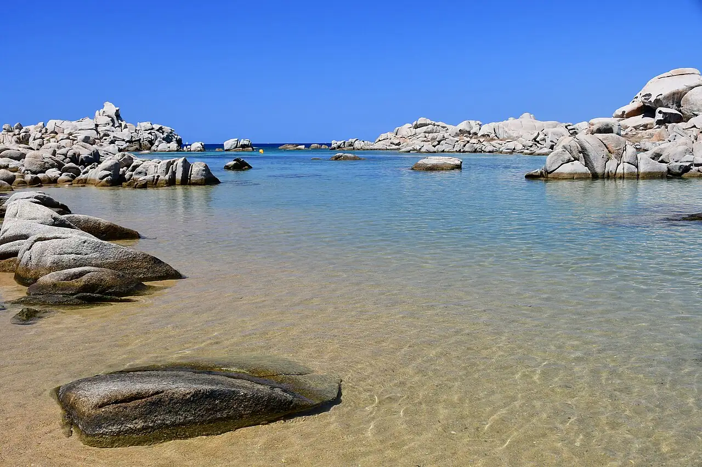

Îles Lavezzi
Bonifacio, Corse-du-Sud, France · snorkeling, plongée, baignade

Archipel de granit au cœur de la réserve naturelle des Bouches de Bonifacio, accessible en bateau depuis Bonifacio. Ses criques turquoise se prêtent au snorkeling, et les plongeurs y viennent pour les mérous.
- Lieu
- Bonifacio, Corse-du-Sud, France
- Niveau
- Débutant
- Activités
- snorkeling, plongée, baignade
- Type d'eau
- Mer / océan
- Coordonnées
- 41.34, 9.25 (position approximative du secteur)
Dangers à connaître
- Vents et courants forts dans les Bouches de Bonifacio : traversées parfois annulées.
- Réserve naturelle : pêche, prélèvements et mouillage réglementés.
- Aucune ombre sur l’île.
Le conseil d'Ocean Buddy
Réserve une navette qui dépose sur l’île pour quelques heures, et emporte eau et protection solaire : il n’y a ni ombre ni service.
Ouvrir dans Ocean Buddy Télécharger sur l'App Store
Source : Fiche Ocean Buddy · septembre 2026 · à vérifier localement.